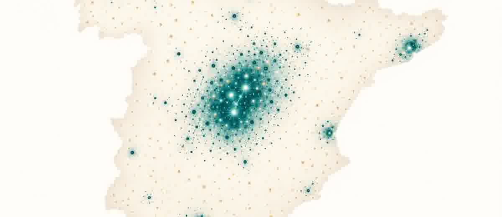

Un grupo dental quiere 600 clínicas y 700 millones antes de 2030. El independiente tiene 4 años.

La semana pasada DONTE GROUP publicó sus números: 427 millones de euros en 2025, 440 clínicas, y un plan que no deja mucho margen para la interpretación. Antes de 2030 quieren llegar a 600 clínicas propias y superar los 700 millones de facturación.
Crecen al triple que el mercado. Detrás tienen un fondo de pensiones de Toronto. Y acaban de comprar Institutos Odontológicos para añadir 40 centros de golpe.
Son los números que ellos mismos declararon. No una previsión de analista. Un plan con nombre, cifra y fecha límite.
Qué significa esto para la clínica de tres sillones
Hay 23.000 clínicas independientes en España. La mayoría factura entre 300.000 y 600.000 euros anuales y las dirige el mismo odontólogo que también pone la boca. DONTE no va a cerrar ninguna de ellas esta semana.
Pero hay un dato que sí importa ahora mismo: los grupos grandes capturan demanda a un ritmo mayor que su peso físico en el mapa. DONTE tiene el 2% de las clínicas del país y gestiona el 5% de la demanda.
Una clínica de cadena bien gestionada atrae más pacientes que su tamaño sugiere. Y esa diferencia tiene una causa muy concreta. No es mejor odontología.
Por qué la cadena gana pacientes sin ser mejor clínica
- Sistema de captación centralizado: inversión en Google Ads, SEO y redes desde una central con datos de cientos de clínicas. La independiente compite con lo que puede pagar sola.
- Recepción con protocolo: métricas de conversión, guion de llamada, seguimiento de contactos. En la clínica media independiente esto depende de quién coja el teléfono ese día.
- Seguimiento de presupuestos: un sistema que no deja morir un presupuesto firmado sin llamar. En la independiente ese presupuesto suele acabar en un cajón.
- Marca reconocible: cuando el paciente nuevo busca en el mapa, elige el nombre que ya conoce. El independiente compite contra ese reconocimiento de marca cada día.
Ninguna de estas cosas requiere ser una cadena. Son procesos. Y los procesos se pueden copiar sin franquiciarse.
La cadena llega con un manual. La independiente puede llegar con cabeza.
Lo que la cadena no puede comprar a escala
El paciente que lleva quince años con el mismo dentista no se va a una cadena porque abra un local a doscientos metros. El que confía en el equipo de recepción, el que sabe que le van a llamar si se olvida de la cita, el que siente que esa clínica lo conoce. Eso no se franquicia.
Pero esa ventaja solo vale si se cultiva activamente. Si la agenda funciona. Si el equipo tiene un protocolo. Si el dueño no es a la vez el único punto de fallo del sistema.
La clínica independiente que construye relación, mide y tiene procesos claros no compite contra DONTE. Compite en un terreno que DONTE no puede replicar a escala.
El 2030 no es una amenaza abstracta. Es un calendario.
DONTE tiene un plan declarado con cifras y fecha. Metric Capital acaba de entrar en Dental Company con objetivos similares. Un fondo de Toronto ya está detrás de Vitaldent.
El independiente tiene tiempo para prepararse, pero ese tiempo tiene un límite concreto.
No se trata de competir con quien tiene detrás un fondo de pensiones. Se trata de que tu clínica funcione sin depender de ti en exclusiva, tenga los procesos que retienen pacientes y valga lo que vale si algún día decides venderla o simplemente tomarte unos días libres sin que todo se pare.
Eso no se hace en una tarde. Pero se puede empezar esta semana.
Fuente: Plan estratégico 2025-2030 de DONTE GROUP / Gaceta Dental, mayo 2026.